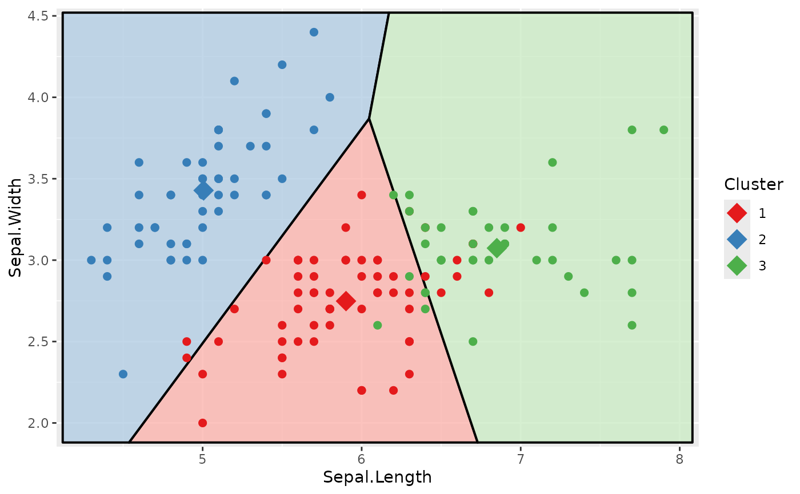

Create a Voronoi diagram for a given clustering object.
voronoi_diagram(
cluster,
x,
y,
data = NULL,
show_data = !is.null(data),
legend = TRUE,
point_size = 2,
linewidth = 0.7
)an object containing the result of a clustering, e.g.,
created by kmeans(). It must contain the fields cluster and
centers.
character giving the names of the variables to be plotted on the x- and y-axis.
The data that has been used to create the clustering. If this
is provided, the extension of the plot is adapted to the data and the
data points are plotted unless this is suppressed by specifying
show_data = FALSE.
should the data points be plotted? This is TRUE by default
if data is given.
should a colour legend for the clusters be plotted?
numeric indicating the size of the data points and the cluster centres.
numeric indicating the width of the lines that separate the areas for the clusters. Set to 0 to show no lines at all.
The function uses the deldir package to create the polygons for the
Voronoi diagram. The code has been inspired by ggvoronoi, which can
handle more complex situations.
Garrett et al., ggvoronoi: Voronoi Diagrams and Heatmaps with ggplot2, Journal of Open Source Software 3(32) (2018) 1096, doi:10.21105/joss.01096
# \donttest{
cluster <- kmeans(iris[, 1:4], centers = 3)
voronoi_diagram(cluster, "Sepal.Length", "Sepal.Width", iris)

# }